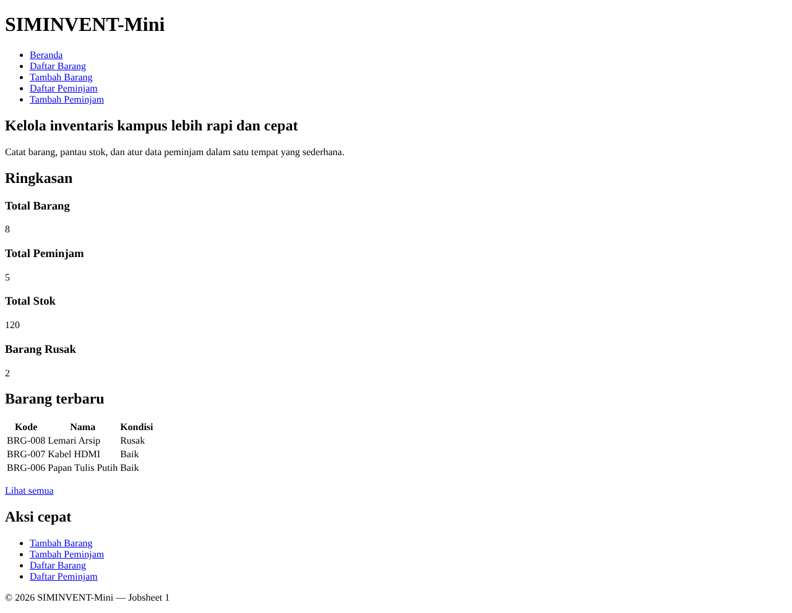
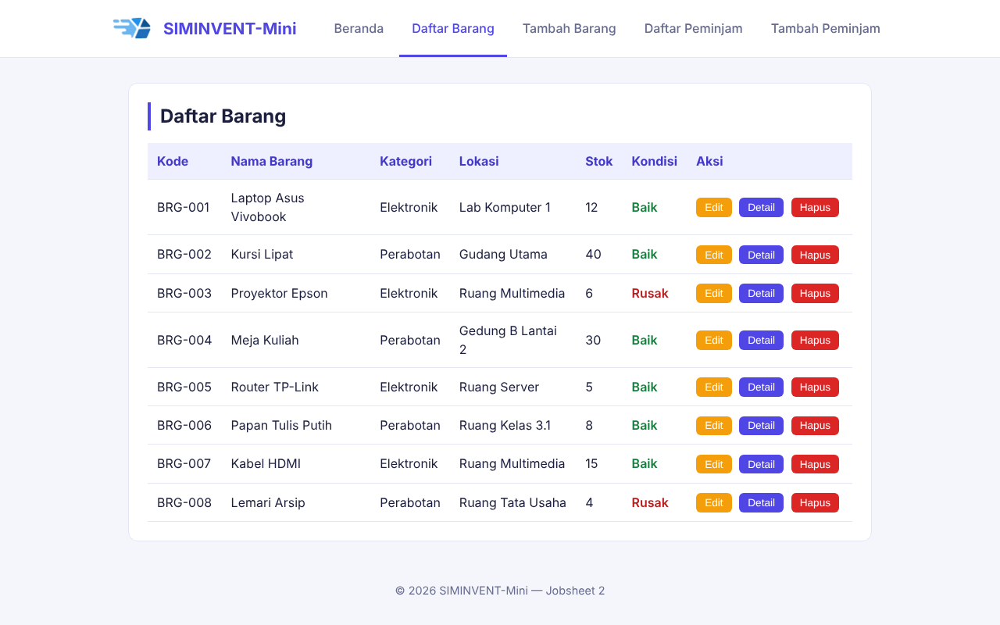
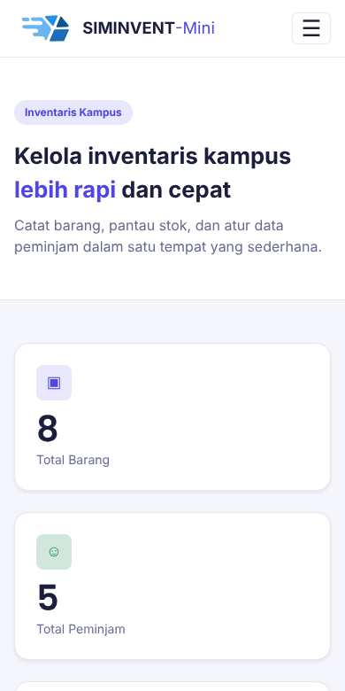
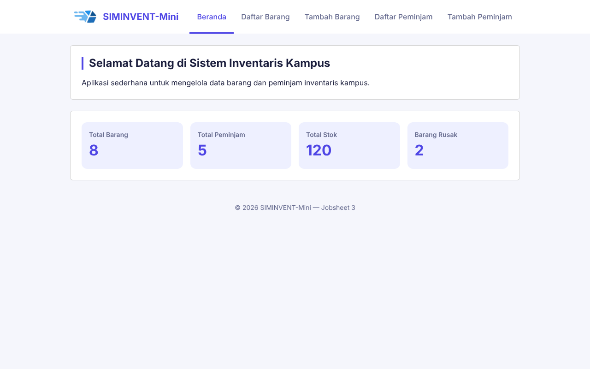
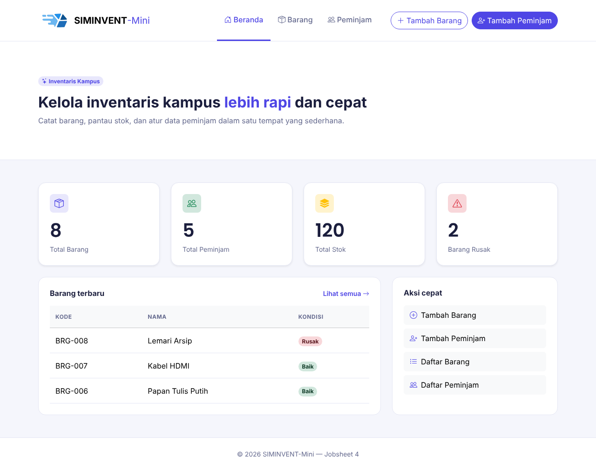
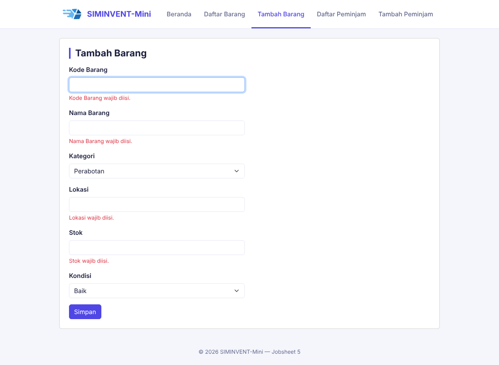
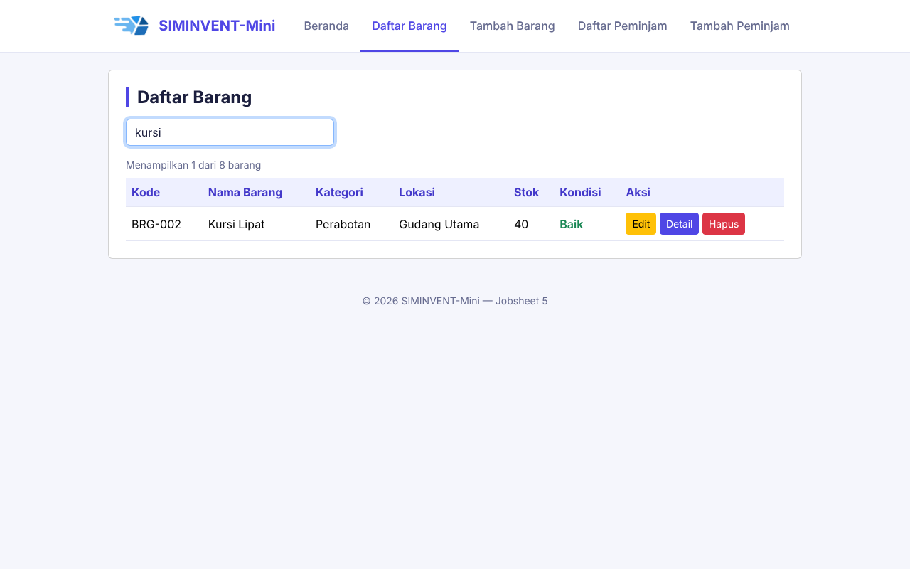
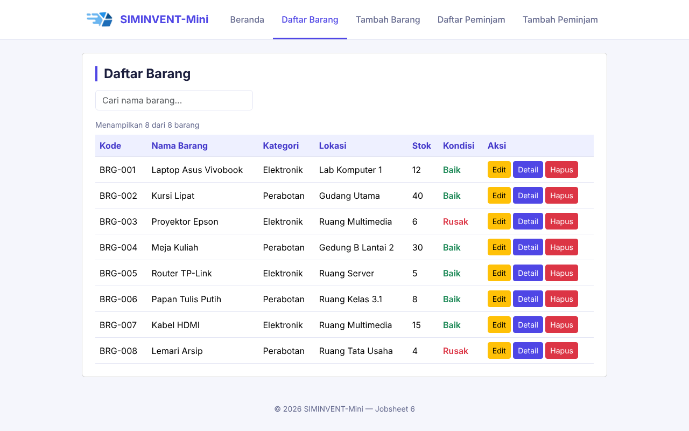
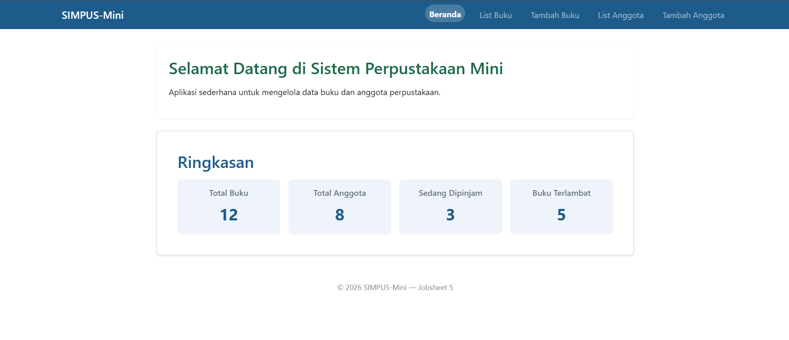

Daffa Rajendra Maulana · TI-2D · 254107020181
Handbook SIMINVENT-Mini
Panduan lengkap Desain Pemrograman Web, Jobsheet 01 sampai 10: dari HTML sampai autentikasi PHP + PostgreSQL.
Gambaran proyek SIMINVENT-Mini: tujuan, data, peta jobsheet 01 sampai 10, alur belajar
Apa itu SIMINVENT-Mini
SIMINVENT-Mini adalah sistem informasi inventaris kampus berukuran kecil. Aplikasi ini mencatat barang (kursi, proyektor, laptop, dan sebagainya) dan peminjam (mahasiswa, dosen, petugas). Proyeknya dibangun bertahap selama mata kuliah Desain Pemrograman Web: dimulai dari HTML polos di Jobsheet 01 dan berakhir sebagai aplikasi PHP dengan database PostgreSQL, login petugas, dan deploy ke internet di Jobsheet 10.
Dalam modul dosen, proyeknya bernama SIMPUS-Mini (perpustakaan dengan entitas buku dan anggota). Di handbook ini seluruh contoh memakai versi SIMINVENT-Mini, jadi padanannya sebagai berikut.
| Modul dosen (SIMPUS-Mini) | Proyek ini (SIMINVENT-Mini) |
|---|---|
| Buku | Barang |
| Anggota | Peminjam |
| Petugas perpustakaan | Petugas inventaris |
| Katalog buku (publik) | Daftar barang (publik) |
Tujuan pembelajaran
- Memahami urutan teknologi web: HTML, CSS, responsif, framework, JavaScript, fetch, PHP, database, autentikasi.
- Mampu menjelaskan kenapa setiap lapisan dibutuhkan, bukan hanya cara menulis kodenya.
- Memiliki satu proyek utuh yang bisa dibuka lewat internet sebagai portofolio.
Data yang dikelola
Barang: kode barang (unik), nama barang, kategori (perabotan atau elektronik), lokasi, stok, kondisi (baik atau rusak), waktu dibuat.
Peminjam: NIM atau NIP (unik), nama, status (mahasiswa, dosen, petugas), prodi atau unit, nomor HP, email.
Petugas (mulai Jobsheet 10): nama, username (unik), password (disimpan sebagai hash), role.
Peta jobsheet
| Jobsheet | Topik | Bentuk hasil | Data disimpan di |
|---|---|---|---|
| 01 | HTML saja | 5 halaman .html tanpa gaya |
Ditulis manual di HTML |
| 02 | CSS tulisan sendiri | Halaman bergaya indigo | Ditulis manual di HTML |
| 03 | CSS responsif dan hamburger | Tampil baik di HP dan laptop | Ditulis manual di HTML |
| 03 Bootstrap | Versi Bootstrap 5 dari jobsheet 03 | Hasil mirip dengan CSS jauh lebih pendek | Ditulis manual di HTML |
| 04 | Rancangan UI/UX dan wireframe | Dokumen docs/wireframe.md |
Belum ada fitur baru |
| 05 | JavaScript DOM dan event | Validasi, pencarian, konfirmasi hapus | Ditulis manual di HTML |
| 06 | fetch dan JSON |
Tabel dibuat dari file JSON | File .json |
| 07 | PHP sisi server dan form | Halaman .php, validasi server |
$_SESSION |
| 08 | PHP dan PostgreSQL, CRUD | Data permanen, edit, hapus | Database PostgreSQL |
| 09 | CRUD lanjutan | Pagination dan pencarian server | Database PostgreSQL |
| 10 | Autentikasi dan sesi | Registrasi, login, logout, halaman terkunci | Database PostgreSQL |
Alur belajar yang disarankan
- Lihat hasilnya dulu. Buka tiap jobsheet dari halaman portofolio (
index.phpdi root) dan bandingkan tampilannya dari 01 sampai 10. - Baca README jobsheet yang bersangkutan. Setiap README memuat tujuan, perubahan dari jobsheet sebelumnya, struktur folder, cara menjalankan, dan cara menguji.
- Buka kodenya sambil membandingkan dengan jobsheet sebelumnya. Perubahan antarjobsheet sengaja kecil supaya mudah dilacak.
- Jalankan dan uji mengikuti langkah "Cara Menguji" di README.
- Latih menjelaskan dengan bagian Tips Presentasi dan pertanyaan dosen di handbook ini.
Pola yang berulang di seluruh jobsheet: halaman dibuat dulu, lalu dihidupkan, lalu datanya dipindah ke tempat yang lebih permanen. HTML menjadi CSS, menjadi JavaScript, menjadi PHP, menjadi database.
Persiapan dari nol: tools, struktur repo, cara menjalankan tiap jobsheet
Tools yang dibutuhkan
| Kebutuhan | Dipakai untuk | Catatan |
|---|---|---|
| Browser (Chrome atau Edge) | Membuka halaman dan DevTools (F12) | Console dan Network sering dipakai untuk uji |
| VS Code | Menulis kode | Ekstensi berguna: Live Server, PHP Intelephense |
| Git dan akun GitHub | Menyimpan dan mengunggah proyek | Setiap jobsheet satu commit |
| PHP 8.x | Menjalankan jobsheet 07 sampai 10 | Bisa lewat Laragon atau php -S |
| Laragon (opsional) | Paket PHP, Apache, dan Postgres di Windows | Alternatif XAMPP |
| Akun Supabase | Database PostgreSQL di internet | Paket gratis cukup |
| Akun Vercel | Menayangkan proyek | Sambungkan dengan akun GitHub |
Struktur repo
Proyek memakai dua repo GitHub dengan isi folder yang sama, tetapi tujuannya berbeda.
| Repo | Fungsi |
|---|---|
| Desain-Pemrograman-Web | Repo tugas yang dinilai dosen. Riwayat commit per jobsheet |
SIMINVENT (folder Desain-Pemrograman-Web-Deploy) |
Salinan khusus untuk Vercel. Dari repo inilah situs ditayangkan |
Struktur folder utamanya:
Desain-Pemrograman-Web/
├── index.php halaman portofolio (daftar jobsheet dan handbook)
├── Dockerfile.vercel menjalankan PHP di Vercel
├── handbook/ handbook ini
├── jobsheet-01/ … jobsheet-06/ HTML, CSS, JavaScript
├── jobsheet-03_bootstrap/ versi Bootstrap dari jobsheet 03
├── jobsheet-07/ PHP dan session
├── jobsheet-08/ PHP dan PostgreSQL
├── jobsheet-09/ pagination dan pencarian
└── jobsheet-10/ autentikasi
Setiap folder jobsheet memuat README.md (laporan), dokumentasi/ (tangkapan layar), dan docs/ bila ada rancangan.
Cara menjalankan tiap jobsheet
| Jobsheet | Cara menjalankan |
|---|---|
| 01 sampai 05 | Buka index.html dengan klik dua kali |
| 06 | Harus lewat server lokal karena fetch ke file diblokir pada file://. Pakai Live Server di VS Code atau python -m http.server 8000 |
| 07 | php -S localhost:8000 dari dalam folder jobsheet, atau lewat Laragon |
| 08, 09, 10 | Sama seperti 07, tetapi database dan environment variable harus siap (lihat bawah) |
Menyiapkan database untuk jobsheet 08 sampai 10
- Buat project di Supabase, lalu buka SQL Editor.
- Jalankan
sql/01_barang_peminjam.sqldari jobsheet 08. Untuk jobsheet 10 jalankan jugasql/02_users.sql. - Ambil data koneksi di tombol Connect, bagian Session pooler.
- Isi environment variable berikut. Nilainya tidak boleh ditulis di dalam kode.
| Variabel | Isi |
|---|---|
DB_HOST |
Host pooler Supabase |
DB_PORT |
5432 |
DB_NAME |
postgres |
DB_USER |
User dari halaman Connect (berbentuk postgres.xxxx) |
DB_PASSWORD |
Password database |
Contoh di PowerShell sebelum menjalankan server lokal:
$env:DB_HOST = "host-pooler-kamu"
$env:DB_PORT = "5432"
$env:DB_NAME = "postgres"
$env:DB_USER = "postgres.xxxx"
$env:DB_PASSWORD = "password-kamu"
php -S localhost:8000
Penting: jangan pernah memasukkan password database ke GitHub. Di Vercel, isi di menu Settings → Environment Variables.
Jobsheet 01: HTML saja
Tujuan
Membuat kerangka semua halaman memakai HTML murni tanpa CSS. Tahap ini hanya soal struktur dan isi, bukan tampilan.
Halaman yang dibuat
| Halaman | Isi |
|---|---|
| Beranda | Sambutan dan ringkasan angka |
| Daftar Barang | Tabel kode, nama, kategori, lokasi, stok, kondisi, aksi |
| Tambah Barang | Form enam isian |
| Daftar Peminjam | Tabel NIM atau NIP, nama, status, prodi, nomor HP, aksi |
| Tambah Peminjam | Form enam isian |
Elemen HTML yang dipakai
| Elemen | Fungsi |
|---|---|
<header>, <nav>, <main>, <section>, <article>, <footer> |
Struktur halaman yang bermakna (semantik) |
<table>, <thead>, <tbody>, <tr>, <th>, <td> |
Menampilkan data berbentuk tabel |
<form>, <label>, <input>, <select>, <button> |
Mengumpulkan isian pengguna |
<a href> |
Berpindah antarhalaman |
Kerangka dasar
<!DOCTYPE html>
<html lang="id">
<head>
<meta charset="UTF-8">
<title>SIMINVENT-Mini</title>
</head>
<body>
<header>
<h1>SIMINVENT-Mini</h1>
<nav>
<a href="index.html">Beranda</a>
<a href="barang/list.html">Daftar Barang</a>
</nav>
</header>
<main>
<section>...</section>
</main>
<footer>...</footer>
</body>
</html>
Hal yang perlu dipahami
<label for="x">harus cocok denganid="x"pada input, supaya klik label memfokuskan isian dan pembaca layar tahu fungsinya.- Atribut
namepada input wajib ada agar nilainya terkirim saat form dikirim. Atributidhanya untuk label dan JavaScript. - Path relatif: halaman di
barang/mengakses beranda dengan../index.html.
Kesalahan yang sering terjadi
| Gejala | Penyebab | Solusi |
|---|---|---|
| Tautan 404 antarhalaman | Path relatif salah | Hitung kedalaman folder, tambah ../ |
| Karakter aneh pada huruf | charset tidak diset |
Tambah <meta charset="UTF-8"> |
| Label tidak bisa diklik | for dan id tidak cocok |
Samakan keduanya |

Jobsheet 02: CSS tulisan sendiri
Tujuan
Memberi tampilan pada halaman Jobsheet 01 memakai CSS yang ditulis sendiri dalam satu file assets/css/style.css.
Rancangan visual
| Elemen | Rancangan |
|---|---|
| Warna utama | Indigo #4f46e5 |
| Latar halaman | #f5f6fc |
| Header | Putih, logo di kiri, menu berbentuk tab |
| Menu aktif | Teks dan garis bawah indigo |
| Konten | Kartu putih bersudut membulat, lebar maksimum 1000px, di tengah |
| Kartu ringkasan | Empat kartu dalam satu baris |
| Tabel | Header indigo muda, baris berubah warna saat di-hover |
| Kondisi barang | Hijau untuk Baik, merah untuk Rusak |
Konsep CSS yang dipakai
Variabel CSS disimpan di :root agar warna diubah di satu tempat saja.
:root {
--indigo: #4f46e5;
--teks: #1b1e3d;
}
.btn-aksi { color: var(--indigo); }
Flexbox untuk satu baris sejajar, misalnya header:
header {
display: flex;
justify-content: center;
align-items: center;
flex-wrap: wrap;
}
Grid untuk kolom beraturan, misalnya empat kartu ringkasan:
.ringkasan {
display: grid;
grid-template-columns: repeat(4, 1fr);
gap: 1rem;
}
Kapan memakai Flexbox atau Grid
| Situasi | Pilihan |
|---|---|
| Satu dimensi (satu baris atau satu kolom), seperti menu | Flexbox |
| Dua dimensi (baris dan kolom sekaligus), seperti deretan kartu | Grid |
Selector dan spesifisitas
- Beri gaya berdasarkan class (
.btn-hapus), bukan posisi elemen, supaya tidak rusak saat urutan berubah. - Bila dua aturan sama kuat, yang ditulis paling akhir menang. Urutan penulisan CSS itu penting.
Kesalahan yang sering terjadi
| Gejala | Penyebab | Solusi |
|---|---|---|
| CSS tidak berpengaruh | Path <link> salah |
Cek tab Network di DevTools |
| Gaya tertimpa | Aturan lain lebih spesifik atau lebih akhir | Periksa tab Styles di DevTools |
| Lebar melebihi layar | Tidak memakai box-sizing: border-box |
Tambahkan pada reset |

Jobsheet 03: CSS responsif dan hamburger
Tujuan
Membuat halaman menyesuaikan diri dengan lebar layar (Responsive Web Design) memakai satu file HTML dan CSS yang sama untuk HP, tablet, dan laptop.
Tiga bahan utama RWD
| Bahan | Contoh | Fungsi |
|---|---|---|
| Meta viewport | <meta name="viewport" content="width=device-width, initial-scale=1"> |
Memberi tahu browser HP agar memakai lebar layar sebenarnya |
| Media query | @media (max-width: 768px) { ... } |
Gaya khusus untuk lebar tertentu |
| Layout lentur | Flexbox, Grid, persen, max-width |
Elemen mengikuti ruang yang tersedia |
Desktop-first
Jobsheet ini memakai pendekatan desktop-first: gaya dasar ditulis untuk layar besar, lalu dikecilkan lewat max-width di bagian paling bawah style.css. Alasannya, pada kekuatan selector yang sama aturan yang ditulis terakhir yang menang.
| Lebar layar | Perubahan |
|---|---|
| 768px ke bawah | Menu diganti tombol hamburger, kartu ringkasan jadi 2 kolom |
| 480px ke bawah | Kartu jadi 1 kolom, jarak tepi dikecilkan, input selebar layar |
@media (max-width: 768px) {
.ringkasan { grid-template-columns: repeat(2, 1fr); }
}
@media (max-width: 480px) {
.ringkasan { grid-template-columns: 1fr; }
}
Hamburger tanpa JavaScript (checkbox hack)
Di jobsheet ini menu hamburger dibuat hanya dengan CSS: sebuah <input type="checkbox"> tersembunyi dan selector :checked ~ menu untuk menampilkan menu. Di Jobsheet 05 cara ini diganti dengan JavaScript.
Tabel di layar sempit
Tabel dibungkus <div class="table-responsive"> dengan overflow-x: auto, sehingga tabel bisa digeser ke samping alih-alih merusak lebar halaman.
Cara menguji
- Buka halaman, tekan F12, lalu klik ikon perangkat (mode responsif).
- Ubah lebar dari besar ke kecil, amati titik 768px dan 480px.
- Pastikan tidak ada scroll horizontal pada halaman, selain di dalam tabel.
Kesalahan yang sering terjadi
| Gejala | Penyebab | Solusi |
|---|---|---|
| Di HP tampil seperti desktop kecil | Meta viewport tidak ada | Tambahkan di setiap halaman |
| Media query tidak jalan | Ditulis di atas aturan dasar | Pindahkan ke bagian paling bawah |
| Halaman bisa digeser ke samping | Ada elemen lebih lebar dari layar | Tambahkan max-width: 100% atau bungkus dengan overflow-x: auto |

Jobsheet 03 Bootstrap
Tujuan
Membangun ulang halaman yang sama dengan Bootstrap 5, supaya terlihat jelas perbedaan antara menulis CSS sendiri dan memakai framework.
Cara memasang Bootstrap
Cukup lewat CDN, tanpa instalasi:
<link href="https://cdn.jsdelivr.net/npm/bootstrap@5.3.3/dist/css/bootstrap.min.css" rel="stylesheet">
<script src="https://cdn.jsdelivr.net/npm/bootstrap@5.3.3/dist/js/bootstrap.bundle.min.js"></script>
Perbandingan dengan CSS murni
| Aspek | Jobsheet 03 (CSS murni) | Jobsheet 03 (Bootstrap) |
|---|---|---|
| Layout | Flex dan grid ditulis manual | .row dan .col-* (grid 12 kolom) |
| Navbar dan hamburger | Checkbox hack | Komponen .navbar bawaan |
| Kartu | CSS custom | Komponen .card |
| Tabel | CSS custom | .table, .table-hover, .table-light |
| Warna kondisi | .baik dan .rusak manual |
.text-success dan .text-danger |
| Form | CSS custom | .form-control, .form-select, .form-label |
| Breakpoint | Ditulis sendiri (768px, 480px) | Bawaan (sm, md, lg, xl, xxl) |
| Baris CSS buatan sendiri | 320 baris | 82 baris |
Contoh komponen
<div class="row g-4">
<div class="col-12 col-md-6 col-lg-3">
<div class="card"><div class="card-body">...</div></div>
</div>
</div>
Artinya: satu kolom penuh di HP, dua kolom di tablet (md), empat kolom di laptop (lg).
Kapan memilih yang mana
| Pilih CSS murni bila | Pilih Bootstrap bila |
|---|---|
| Ingin kontrol penuh dan belajar dasar | Ingin cepat jadi dan konsisten |
| Tampilan sangat khusus | Tampilan standar sudah cukup |
| Ingin file ringan tanpa dependensi | Tidak masalah memuat CSS dan JS tambahan |
Di jobsheet 08 sampai 10, Bootstrap tetap dipakai dengan sedikit penyesuaian warna (indigo) di style.css.

Jobsheet 04: rancangan UI/UX dan wireframe
Tujuan
Merancang tampilan dan alur penggunaan sebelum fiturnya dibuat. Tidak ada perubahan kode; hasilnya dokumen docs/wireframe.md.
Aktor dan hak akses
| Aktor | Peran |
|---|---|
| Tamu | Pengunjung tanpa login. Hanya melihat daftar barang |
| Petugas | Sudah login. Mengelola barang, peminjam, serta peminjaman dan pengembalian |
Tamu yang membuka halaman khusus petugas diarahkan ke halaman Login. Rancangan inilah yang diwujudkan di Jobsheet 10.
Halaman yang dirancang
Login, Registrasi Petugas, Dashboard Petugas, Form Peminjaman, Form Pengembalian, dan Riwayat Peminjaman.
User flow peminjaman
- Petugas login.
- Dari Dashboard pilih Peminjaman Baru, lalu pilih peminjam.
- Bila peminjam punya tunggakan, peminjaman ditolak.
- Pilih barang. Bila stok 0 atau barang rusak, muncul pesan dan petugas memilih barang lain.
- Tekan Simpan: stok berkurang satu, transaksi tercatat, muncul pesan sukses.
Skenario khusus (edge case)
| Situasi | Perilaku sistem |
|---|---|
| Stok barang 0 | Barang non-aktif dengan label "(Stok habis)" |
| Barang rusak | Barang non-aktif dengan label "(Rusak)" |
| Peminjam bertunggakan | Peminjaman ditolak beserta alasannya |
| Login gagal | Pesan umum tanpa menyebut mana yang salah |
| Tamu membuka halaman petugas | Diarahkan ke Login |
| Data kosong | Tampil teks "Belum ada data" |
Mengapa merancang dulu
- Kesalahan alur murah diperbaiki di kertas, mahal diperbaiki di kode.
- Semua halaman berikutnya memakai pola yang sama, sehingga tampilan konsisten.
- Skenario khusus yang dipikirkan sejak awal menghindari kode tambal sulam.
Peringatan jujur
Fitur peminjaman dan pengembalian dalam rancangan ini belum dibangun pada SIMINVENT-Mini yang ada sekarang. Di modul dosen, fitur itu baru muncul di Jobsheet 12, yang belum menjadi bagian proyek ini.

Jobsheet 05: JavaScript DOM dan event
Tujuan
Menghidupkan halaman di sisi browser: menu hamburger, validasi form, pencarian tabel, dan konfirmasi hapus. Semuanya berjalan tanpa server dan tanpa database, dalam satu berkas assets/js/app.js.
Pola dasar yang dipakai terus
- Pilih elemen:
document.getElementById("search-input")atauquerySelectorAll(".btn-hapus"). - Pasang event listener:
addEventListener("click", fungsi). - Ubah DOM:
style.display,classList.toggle,createElement,textContent.
Fitur yang dibuat
| Fitur | Event | Cara kerja |
|---|---|---|
| Hamburger | click |
classList.toggle("show") pada menu #navMenu |
| Validasi form | submit |
Memeriksa tiap isian, menampilkan pesan di bawah field, preventDefault() bila ada salah |
| Pencarian real-time | keyup |
Menyembunyikan baris yang tidak cocok dengan style.display = "none" |
| Counter baris | Mengikuti pencarian | Teks "Menampilkan X dari Y barang" |
| Konfirmasi hapus | click |
Dialog confirm() sebelum baris dihapus |
Aturan validasi
| Form | Isian | Aturan |
|---|---|---|
| Barang | Kode Barang | Wajib, hanya huruf, angka, dan tanda hubung |
| Barang | Stok | Bilangan bulat, tidak negatif |
| Peminjam | NIM / NIP | Angka, 8 sampai 20 digit |
| Peminjam | No. HP | 8 sampai 15 karakter (angka, plus, hubung) |
| Peminjam | Format email valid |
Refactor: aturan disimpan sebagai data
Alih-alih satu blok if per isian, aturan disimpan dalam array lalu dicek dengan satu perulangan.
const ATURAN = [
{ name: "kode_barang", label: "Kode Barang", wajib: true,
pola: /^[A-Za-z0-9-]+$/,
pesanPola: "Kode Barang hanya boleh berisi huruf, angka, dan tanda hubung (-)." },
{ name: "stok", label: "Stok", wajib: true, bulat: true, min: 0 }
];
ATURAN.forEach(function (aturan) {
const input = form.querySelector("[name='" + aturan.name + "']");
const pesan = cekNilai(aturan, input.value);
// tampilkan atau hapus pesan error
});
Menambah aturan baru cukup menambah satu objek ke array.
Pencarian hanya pada kolom nama
Alih-alih membaca seluruh teks baris, pencarian membaca satu sel saja lewat row.cells[idx], sehingga mengetik "baik" tidak ikut menemukan kolom Kondisi.
Batasan penting
Hapus di jobsheet ini hanya menghilangkan baris dari tampilan. Data muncul lagi setelah halaman dimuat ulang karena belum ada penyimpanan. Itu sebabnya jobsheet 07 dan 08 dibutuhkan.
Kesalahan yang sering terjadi
| Gejala | Penyebab | Solusi |
|---|---|---|
Cannot read properties of null |
Elemen belum ada saat script jalan, atau id salah | Pasang script di akhir <body> atau pakai DOMContentLoaded |
| Hamburger terbuka lalu langsung menutup | Bootstrap dan JavaScript sendiri sama-sama men-toggle | Hapus atribut data-bs-toggle dan data-bs-target dari tombol |
| Form tetap terkirim walau ada error | Lupa e.preventDefault() |
Panggil saat ada isian tidak valid |
| Pesan error browser muncul mendahului pesan sendiri | Validasi bawaan browser aktif | Tambahkan novalidate pada <form> |


Jobsheet 06: fetch dan JSON
Tujuan
Mengambil data secara asinkron dari file JSON memakai fetch, lalu menampilkannya sebagai baris tabel. File JSON menjadi pengganti sementara untuk server, sebelum PHP dan database tersedia.
Konsep kunci
| Konsep | Penjelasan |
|---|---|
| JSON | Format teks untuk data: objek {} dan array [] |
fetch(url) |
Meminta data tanpa memuat ulang halaman, hasilnya berupa Promise |
async / await |
Menulis kode asinkron agar terbaca berurutan |
try / catch / finally |
Menangani kegagalan, dan menjalankan pembersihan apa pun hasilnya |
| Loading indicator | Memberi tahu pengguna bahwa data sedang diambil |
Contoh data
[
{ "kode": "BRG-001", "nama": "Kursi Lipat", "kategori": "perabotan",
"lokasi": "Lab 1", "stok": 12, "kondisi": "baik" }
]
Alur kerja
async function muatBarang() {
tampilkanLoading();
try {
const res = await fetch("../data/barang.json");
if (!res.ok) throw new Error("Gagal memuat data");
const daftar = await res.json();
daftar.forEach(function (b) { tbody.append(buatBaris(b)); });
} catch (err) {
tampilkanPesan("Gagal memuat data");
} finally {
sembunyikanLoading();
perbaruiCounter();
}
}
- Tampilkan loading dan kosongkan
<tbody>. fetchmengambil file. Bilares.oksalah, lempar error.res.json()mengubah teks menjadi array objek JavaScript.- Tiap objek dijadikan
<tr>lewatcreateElement. - Blok
finallymenyembunyikan loading, baik berhasil maupun gagal.
Versi .then() yang setara
fetch("../data/barang.json")
.then(function (res) { return res.json(); })
.then(function (daftar) { /* render baris */ })
.catch(function (err) { /* tampilkan pesan gagal */ });
await terbaca dari atas ke bawah, .then() berantai. Hasilnya sama.
Event delegation
Baris tabel dibuat setelah halaman dimuat, sehingga pendengar click tidak bisa dipasang langsung ke tombol Hapus yang belum ada. Solusinya: pasang satu pendengar di document, lalu periksa e.target.closest(".btn-hapus"). Pola ini tetap dipakai sampai jobsheet 10.
Kesalahan yang sering terjadi
| Gejala | Penyebab | Solusi |
|---|---|---|
Failed to fetch atau CORS |
Halaman dibuka dengan file:// |
Jalankan lewat Live Server atau python -m http.server |
| Tabel kosong tanpa pesan | Path JSON salah | Cek tab Network, cari status 404 |
| Tombol Hapus pada baris baru tidak jalan | Listener dipasang sebelum baris ada | Gunakan event delegation |
Perbedaan inti dengan jobsheet 07: di sini JavaScript di browser yang membuat baris tabel. Di jobsheet 07 PHP di server yang membuatnya, sehingga file
buku.jsdananggota.jsdihapus.

Jobsheet 07: PHP sisi server dan form
Tujuan
Memproses input form di server: ambil dari $_POST, validasi, simpan sementara di $_SESSION, lalu tampilkan di halaman daftar. Ini titik peralihan dari front-end murni ke server-side.
Perubahan utama dari jobsheet 06
- Semua halaman
.htmlmenjadi.php. - Navbar dan footer dipindah ke
includes/header.phpdanincludes/footer.php. - Form memakai
method="post"danaction="proses_tambah.php". - Daftar dirender oleh PHP dengan
foreach, bukan olehfetch. - File
buku.js,anggota.js, dan folderdata/dihapus.
Alur data
tambah.php (form) --POST--> proses_tambah.php --valid--> $_SESSION[...] --> redirect list.php
|
+--tidak valid--> flash error + isian lama --> redirect tambah.php
Potongan kode inti
<?php
$nama = trim($_POST['nama'] ?? '');
$errors = [];
if ($nama === '') {
$errors[] = 'Nama wajib diisi.';
}
if (!empty($errors)) {
setFlash('error', $errors);
redirect('tambah.php');
}
$_SESSION['peminjam'][] = ['nama' => $nama];
setFlash('success', 'Data berhasil ditambahkan.');
redirect('list.php');
Konsep penting
| Konsep | Penjelasan |
|---|---|
$_POST, $_GET |
Data kiriman form dan URL |
$_SESSION |
Penyimpanan per pengunjung di server, bertahan antarhalaman |
| Validasi server | Wajib ada, karena validasi JavaScript bisa dilewati |
| Pola PRG (Post, Redirect, Get) | Setelah POST selalu redirect, agar refresh tidak mengirim ulang form |
| Flash message | Pesan disimpan di session, ditampilkan sekali, lalu dihapus |
| Old input | Isian lama dikembalikan ke form saat validasi gagal |
e() / htmlspecialchars |
Mengubah < menjadi < agar input tidak menjadi skrip (mencegah XSS) |
Path relatif otomatis
header.php menghitung awalan path ($base) dari kedalaman folder halaman: kosong di root, ../ untuk halaman di subfolder. Dengan begitu proyek berjalan benar dari root domain maupun dari subfolder.
Validasi di dua lapisan
| Lapisan | Gunanya | Bisa dilewati? |
|---|---|---|
| JavaScript (client) | Umpan balik cepat bagi pengguna | Ya, dengan mematikan JavaScript atau mengirim request manual |
| PHP (server) | Penjaga sebenarnya | Tidak |
Cara menguji
- Kirim form kosong: JavaScript menahan dan menampilkan error.
- Nonaktifkan JavaScript lalu kirim data tidak valid: server tetap menolak.
- Isi judul dengan
<b>tes</b>: tampil sebagai teks biasa, bukan huruf tebal. - Buka
proses_tambah.phplangsung dari address bar: dialihkan kembali ke form.
Kesalahan yang sering terjadi
| Gejala | Penyebab | Solusi |
|---|---|---|
| Halaman PHP tampil sebagai teks kode | Dibuka dengan klik dua kali | Jalankan lewat server PHP |
Cannot modify header information |
Ada output sebelum header() atau redirect() |
Pastikan tidak ada spasi atau HTML sebelum <?php |
| Data hilang saat ditutup lalu dibuka | Session hanya sementara | Normal, solusinya database di jobsheet 08 |

Jobsheet 08: PHP dan PostgreSQL, CRUD
Tujuan
Mengganti $_SESSION dengan database PostgreSQL sehingga data permanen. Mencakup perancangan tabel, koneksi PDO, dan keempat operasi CRUD: Create, Read, Update, Delete.
Arsitektur
Browser → PHP (Vercel atau Laragon) → PDO → PostgreSQL (Supabase)
PHP tidak menyimpan data sendiri. PHP hanya menerima permintaan, bertanya ke database, lalu merakit HTML.
Skema tabel
CREATE TABLE IF NOT EXISTS barang (
id SERIAL PRIMARY KEY,
kode_barang VARCHAR(50) NOT NULL UNIQUE,
nama_barang VARCHAR(150) NOT NULL,
kategori VARCHAR(20) CHECK (kategori IN ('perabotan', 'elektronik')),
lokasi VARCHAR(100) NOT NULL,
stok INTEGER CHECK (stok >= 0),
kondisi VARCHAR(20) CHECK (kondisi IN ('baik', 'rusak')),
dibuat_pada TIMESTAMP DEFAULT NOW()
);
Tabel peminjam dirancang serupa: nim unik, status salah satu dari mahasiswa, dosen, petugas, serta prodi, nomor HP, dan email.
| Batasan | Fungsi |
|---|---|
PRIMARY KEY dan SERIAL |
Nomor unik otomatis untuk tiap baris |
UNIQUE |
Mencegah kode barang atau NIM kembar |
NOT NULL |
Isian wajib |
CHECK |
Membatasi nilai yang boleh masuk |
DEFAULT NOW() |
Waktu otomatis saat baris dibuat |
Koneksi PDO
$pdo = new PDO(
"pgsql:host=$host;port=$port;dbname=$db;sslmode=require",
$user,
$pass
);
$pdo->setAttribute(PDO::ATTR_ERRMODE, PDO::ERRMODE_EXCEPTION);
Kredensial dibaca dari environment variable (getenv('DB_HOST') dan seterusnya), bukan ditulis di kode. Mode ERRMODE_EXCEPTION membuat error database dilempar sebagai exception yang bisa ditangkap.
CRUD dengan prepared statement
| Operasi | Berkas | Perintah SQL |
|---|---|---|
| Create | proses_tambah.php |
INSERT INTO ... VALUES (:kode, :nama, ...) |
| Read | list.php, edit.php |
SELECT * FROM barang dan WHERE id = :id |
| Update | proses_edit.php |
UPDATE ... SET ... WHERE id = :id |
| Delete | proses_hapus.php |
DELETE FROM barang WHERE id = :id |
$stmt = $pdo->prepare(
'INSERT INTO barang (kode_barang, nama_barang, kategori, lokasi, stok, kondisi)
VALUES (:kode, :nama, :kategori, :lokasi, :stok, :kondisi)'
);
$stmt->execute([
'kode' => $kode, 'nama' => $nama, 'kategori' => $kategori,
'lokasi' => $lokasi, 'stok' => $stok, 'kondisi' => $kondisi,
]);
Kenapa prepared statement: nilai dikirim terpisah dari perintah SQL, sehingga tidak bisa menyisipkan perintah berbahaya (SQL Injection). Jangan pernah menyambung string seperti "... WHERE id = $id".
Menangani data kembar
try {
$stmt->execute([...]);
} catch (PDOException $e) {
if ($e->getCode() === '23505') {
setFlash('error', 'Kode barang sudah dipakai.');
} else {
error_log($e->getMessage());
setFlash('error', 'Terjadi kesalahan saat menyimpan data.');
}
redirect('tambah.php');
}
Kode 23505 adalah SQLSTATE PostgreSQL untuk pelanggaran UNIQUE. Pesan teknis hanya masuk log server, pengguna melihat pesan yang rapi.
Hapus harus POST
Penghapusan hanya menerima POST, karena tautan biasa (GET) bisa terpicu tidak sengaja oleh mesin pencari atau prefetch browser. Tombol Hapus pada daftar membuat form POST lewat JavaScript setelah pengguna menekan OK pada dialog konfirmasi. Di server, proses_hapus.php menolak akses selain POST.
Fitur tambahan jobsheet ini
- Beranda menampilkan statistik dari database: total barang, total peminjam, total stok, barang rusak.
- Pencarian sisi server di daftar barang dengan
ILIKE. migrasi_peminjam.phpmemindahkan data lama dari JSON ke tabelpeminjam(sekali jalan).- Seluruh gaya dijadikan satu file
style.css.
Peran $_SESSION sekarang
Data tidak lagi di session, tetapi session tetap dipakai untuk flash message dan old input.
Kesalahan yang sering terjadi
Lihat bagian Troubleshooting umum. Ringkasnya: variabel koneksi salah atau kosong, project Supabase sedang di-pause, dan tabel lama yang strukturnya berbeda.
Jobsheet 09: CRUD lanjutan, edit, hapus, pencarian, pagination
Tujuan
Menyempurnakan CRUD: konfirmasi hapus yang benar-benar terhubung ke server, pencarian sisi server, dan pagination agar daftar tidak menampilkan semua data sekaligus.
Apa yang berubah dari jobsheet 08
| Berkas | Perubahan |
|---|---|
barang/list.php, peminjam/list.php |
Hitung total, ambil 5 data per halaman, cari dengan ILIKE, urut id DESC |
includes/helpers.php |
Fungsi tampilkanPaginasi() |
assets/js/app.js |
Filter tabel sisi klien dihapus karena pencarian kini dikerjakan server |
assets/css/style.css |
Warna komponen pagination mengikuti tema |
Cara kerja pagination
$perPage = 5;
$keyword = trim($_GET['q'] ?? '');
$page = max(1, (int) ($_GET['page'] ?? 1));
$hitung = $pdo->prepare('SELECT COUNT(*) FROM barang WHERE nama_barang ILIKE :kw');
$hitung->execute(['kw' => '%' . $keyword . '%']);
$totalRows = (int) $hitung->fetchColumn();
$totalPages = max(1, (int) ceil($totalRows / $perPage));
$page = min($page, $totalPages);
$offset = ($page - 1) * $perPage;
$stmt = $pdo->prepare(
'SELECT * FROM barang WHERE nama_barang ILIKE :kw
ORDER BY id DESC LIMIT :limit OFFSET :offset'
);
$stmt->bindValue('kw', '%' . $keyword . '%');
$stmt->bindValue('limit', $perPage, PDO::PARAM_INT);
$stmt->bindValue('offset', $offset, PDO::PARAM_INT);
$stmt->execute();
| Langkah | Alasan |
|---|---|
COUNT(*) dulu |
Untuk tahu jumlah halaman |
max(1, ...) pada halaman |
Mencegah halaman nol atau negatif |
min($page, $totalPages) |
Halaman terlalu besar dialihkan ke halaman terakhir |
OFFSET = (halaman - 1) × per halaman |
Menentukan baris awal |
bindValue(..., PDO::PARAM_INT) |
LIMIT dan OFFSET harus berupa angka, bukan teks |
ORDER BY id DESC |
Data terbaru tampil di halaman pertama |
Pencarian server dan GET
Form pencarian memakai method="get", sehingga kata kunci dan halaman muncul di URL (list.php?q=kursi&page=2). URL itu bisa disalin, di-bookmark, dan tetap benar saat halaman di-refresh. Nomor halaman membawa kata kunci lewat urlencode.
Pencarian server dan filter klien
| Filter klien (jobsheet 05) | Pencarian server (jobsheet 09) | |
|---|---|---|
| Mencari di | Baris yang sedang tampil | Seluruh data di database |
| Dikerjakan oleh | JavaScript di browser | SQL ILIKE di server |
| Cocok untuk | Data sedikit | Data banyak |
ILIKE adalah bentuk LIKE milik PostgreSQL yang tidak membedakan huruf besar dan kecil.
Cara menguji
- Tambahkan lebih dari 5 barang. Nomor halaman muncul, halaman 2 berisi sisanya.
- Cari satu kata. URL berubah menjadi
list.php?q=..., dan jumlah halaman mengikuti hasil. - Buka
list.php?page=99. Otomatis menampilkan halaman terakhir. - Cari kata yang tidak ada. Muncul pesan data tidak ditemukan.
- Klik Hapus lalu Cancel pada dialog: tidak ada yang berubah dan tidak ada permintaan ke server.
Kesalahan yang sering terjadi
| Gejala | Penyebab | Solusi |
|---|---|---|
Error sintaks pada LIMIT |
Nilai di-bind sebagai teks | Gunakan bindValue dengan PDO::PARAM_INT |
| Pagination hilang setelah mencari | Kata kunci tidak dibawa pada tautan halaman | Sertakan &q= di setiap tautan |
| Halaman kosong di halaman jauh | Halaman tidak dibatasi | Pakai min($page, $totalPages) |
Jobsheet 10: autentikasi dan sesi, penguncian halaman
Tujuan
Hanya petugas yang sudah login boleh mengubah data. Jobsheet ini menambah registrasi, login, logout, dan penjaga halaman.
Autentikasi dan otorisasi
| Istilah | Pertanyaan yang dijawab |
|---|---|
| Autentikasi | "Kamu siapa?" (login) |
| Otorisasi | "Kamu boleh melakukan apa?" (hak akses) |
Tabel users
CREATE TABLE IF NOT EXISTS users (
id SERIAL PRIMARY KEY,
nama VARCHAR(255) NOT NULL,
username VARCHAR(50) NOT NULL UNIQUE,
password VARCHAR(255) NOT NULL,
role VARCHAR(20) NOT NULL DEFAULT 'petugas'
);
Password tidak pernah disimpan apa adanya
$hash = password_hash($password, PASSWORD_DEFAULT);
password_verify($password, $user['password']);
password_hash() menghasilkan teks acak satu arah (tidak bisa dikembalikan ke password asli). password_verify() mencocokkan password yang diketik dengan hash tersebut. Jika database bocor, password asli pengguna tetap aman.
Berkas yang ditambahkan
| Berkas | Fungsi |
|---|---|
auth/register.php, proses_register.php |
Daftar akun, cek username kembar, simpan hash |
auth/login.php, proses_login.php |
Cek password, simpan identitas ke $_SESSION |
auth/logout.php |
session_destroy() lalu kembali ke login |
includes/auth.php |
Penjaga halaman |
Proses login
$stmt = $pdo->prepare('SELECT * FROM users WHERE username = :username');
$stmt->execute(['username' => $username]);
$user = $stmt->fetch(PDO::FETCH_ASSOC);
if ($user && password_verify($password, $user['password'])) {
$_SESSION['user_id'] = $user['id'];
$_SESSION['nama'] = $user['nama'];
$_SESSION['role'] = $user['role'];
redirect('../index.php');
}
setFlash('error', 'Username atau password salah.');
redirect('login.php');
Pesan gagal sengaja umum: penyerang tidak boleh tahu apakah yang salah usernamenya atau passwordnya.
Penjaga halaman
<?php
require_once __DIR__ . '/helpers.php';
if (!isset($_SESSION['user_id'])) {
redirect('../auth/login.php');
}
Cara memakainya adalah menaruh satu baris di paling atas halaman yang dikunci:
<?php
require __DIR__ . '/../includes/auth.php';
Kenapa harus baris pertama: pengalihan memakai header('Location: ...'), yang gagal bila halaman sudah mengeluarkan HTML. Penjaga juga tidak butuh database, jadi tetap bekerja walau koneksi database bermasalah.
Pada halaman proses_*.php, baris auth menggantikan require helpers.php, karena auth.php sudah memuat helpers.php. Memuatnya dua kali menimbulkan error "Cannot redeclare e()".
Siapa boleh apa
| Halaman | Tamu | Petugas |
|---|---|---|
| Beranda | Boleh | Boleh |
| Daftar Barang | Boleh | Boleh |
| Tambah, edit, hapus barang | Dialihkan ke Login | Boleh |
| Seluruh halaman Peminjam | Dialihkan ke Login | Boleh |
| Login dan Registrasi | Boleh | Dialihkan ke Beranda |
Navbar dinamis
$sudahLogin = isset($_SESSION['user_id']);
<?php if ($sudahLogin): ?>
<span><?= e($_SESSION['nama']) ?></span>
<a href="<?= $base ?>auth/logout.php">Logout</a>
<?php else: ?>
<a href="<?= $base ?>auth/login.php">Login</a>
<?php endif; ?>
Menyembunyikan menu bukan pengganti penjagaan. Menu hanya merapikan tampilan, sedangkan
auth.phpyang benar-benar memblokir akses langsung lewat URL. Keduanya harus ada.
Cara menguji
- Tanpa login, buka
peminjam/list.phpataubarang/tambah.php: dialihkan ke Login. - Daftar lewat Registrasi, lalu login: navbar menampilkan nama dan Logout.
- Buka lagi halaman yang tadi terkunci: sekarang bisa.
- Lihat kolom
passworddi tabelusers: berisi teks acak panjang. - Salah memasukkan password: muncul pesan umum "Username atau password salah."
- Logout, lalu buka halaman terkunci: kembali dialihkan ke Login.
Yang belum ada
Pembatasan berdasarkan role (misalnya hanya admin yang boleh menghapus) belum diterapkan. Kolom role sudah tersedia, jadi pengembangannya tinggal memeriksa $_SESSION['role'] setelah baris auth.
Kesalahan yang sering terjadi
| Gejala | Penyebab | Solusi |
|---|---|---|
Cannot redeclare e() |
helpers.php dimuat dua kali |
Ganti require helpers dengan baris auth pada proses_*.php |
| Pengalihan ke Login tidak jalan | Ada output sebelum auth.php |
Letakkan baris auth paling atas |
| Login berhasil tetapi langsung terlempar lagi | Session tidak dimulai | Pastikan session_start() ada di helpers.php |
Portofolio dan deploy
Portofolio
Halaman portofolio adalah index.php di root repo. Isinya daftar kartu yang menautkan ke tiap jobsheet, ditambah menu Handbook ini. Tiap jobsheet punya README.md berbentuk laporan: identitas, tujuan, perubahan, struktur folder, cara menjalankan, cara menguji, dokumentasi (tangkapan layar), dan kesimpulan.
Standar README per jobsheet yang dipakai di proyek ini:
| Bagian | Isi |
|---|---|
| Identitas | Nama, NIM, mata kuliah, kelas |
| Tujuan | Satu atau dua kalimat |
| Perubahan dari jobsheet sebelumnya | Daftar berkas atau fitur yang berubah |
| Struktur folder | Pohon folder singkat |
| Dokumentasi | Gambar dari folder dokumentasi/ |
| Cara menjalankan dan menguji | Langkah bernomor |
| Kesimpulan | Satu paragraf |
Menyimpan ke GitHub
Satu jobsheet, satu commit. Pesan commit mengikuti pola yang sama agar riwayat rapi.
| Contoh pesan | Isi commit |
|---|---|
JS7_PHP & Form Handling |
Kode jobsheet 7 |
JS8_Database & SQL |
Kode dan SQL jobsheet 8 |
JS8_Laporan dan Dokumentasi |
README dan tangkapan layar |
JS8_Update Desain |
Perubahan tampilan |
Alur harian:
git status
git add .
git commit -m "JS10_Autentikasi & Sesi"
git push
Jangan memakai
git push --forcetanpa benar-benar paham dampaknya, karena riwayat orang lain bisa hilang. Bila cabang lokal dan remote berbeda riwayat, selesaikan dengan merge ataugit revert, bukan memaksa.
Memeriksa folder terhubung ke repo yang mana
git remote -v
Perintah ini menampilkan alamat repo yang dituju push. Bila salah, ganti dengan git remote set-url origin <alamat-baru>.
Menayangkan ke Vercel
Vercel menjalankan PHP lewat Dockerfile. Berkas Dockerfile.vercel di root repo berisi:
FROM dunglas/frankenphp:php8.3-bookworm
WORKDIR /app
RUN install-php-extensions pdo_pgsql
COPY . /app
CMD ["sh", "-c", "frankenphp php-server --listen :${PORT:-80} --root /app"]
Artinya: pakai FrankenPHP (server PHP 8.3), pasang ekstensi pdo_pgsql supaya PHP bisa bicara dengan PostgreSQL, salin seluruh proyek, lalu jalankan server pada port yang diberikan Vercel.
Langkah deploy:
- Dorong kode ke GitHub.
- Di Vercel, pilih Add New Project, lalu impor repo.
- Atur preset proyek ke opsi Container bila tersedia, sehingga Dockerfile yang dipakai.
- Isi Environment Variables:
DB_HOST,DB_PORT,DB_NAME,DB_USER,DB_PASSWORD. Nama variabel harus persis sama, termasuk huruf besar. - Klik Deploy, lalu buka alamat yang diberikan.
- Setiap
git pushberikutnya memicu deploy ulang otomatis.
Hal yang perlu diperhatikan saat deploy
| Hal | Penjelasan |
|---|---|
| Paket gratis (Hobby) | Repo milik organisasi yang privat tidak bisa dideploy. Pakai repo di akun pribadi |
| Author commit | Pada paket gratis, commit harus berasal dari pemilik akun |
| Supabase gratis | Project bisa di-pause bila lama tidak aktif. Klik Restore project sebelum demo |
| Variabel lingkungan | Perubahan nilai baru berlaku setelah deploy ulang |
| Cache | Aplikasi mengirim Cache-Control: no-store agar data selalu terbaru |
| Rahasia | Jangan memasukkan password ke repo. .env sudah ada di .gitignore |
Daftar periksa sebelum menyerahkan
- [ ] Semua jobsheet terbuka dari halaman portofolio.
- [ ] README tiap jobsheet lengkap dan gambarnya tampil.
- [ ] Registrasi, login, dan CRUD berjalan di alamat Vercel (bukan hanya di lokal).
- [ ] Tidak ada password atau kunci di dalam repo.
- [ ] Pesan commit konsisten.
Tips presentasi dan pertanyaan yang sering muncul dari dosen
Menyiapkan presentasi
- Siapkan data dan akun contoh sebelum mulai, termasuk satu akun petugas yang sudah terdaftar.
- Pastikan Supabase aktif dan alamat Vercel bisa dibuka. Buka halamannya 10 menit sebelum giliran.
- Siapkan cadangan lokal (
php -S localhost:8000) untuk jaga-jaga bila internet bermasalah. - Buka tab yang dibutuhkan lebih dulu: portofolio, halaman Barang, halaman Login, editor dengan
includes/auth.php, dan Supabase Table Editor.
Urutan demo yang disarankan (5 sampai 7 menit)
| Menit | Yang ditunjukkan | Yang dijelaskan |
|---|---|---|
| 0 sampai 1 | Portofolio, jobsheet 01 sampai 03 | Perkembangan dari HTML ke responsif |
| 1 sampai 2 | Jobsheet 05 dan 06 | JavaScript: validasi, pencarian, fetch |
| 2 sampai 3 | Jobsheet 07 | Perpindahan ke server dan validasi server |
| 3 sampai 5 | Jobsheet 08 dan 09 | Database, CRUD, prepared statement, pagination dan pencarian |
| 5 sampai 6 | Jobsheet 10 | Buka halaman terkunci tanpa login, daftar, login, tampilkan hash di Supabase |
| 6 sampai 7 | Penutup | Yang sudah dipelajari dan rencana pengembangan |
Cara menjawab
- Jawab pendek dulu (satu kalimat), lalu beri alasan atau contoh dari kode sendiri.
- Tunjukkan baris kodenya bila ditanya "di mana". Hafal berkas utama tiap jobsheet.
- Bila belum tahu, katakan terus terang lalu sebutkan bagaimana kamu akan mencarinya. Itu lebih baik daripada menebak.
- Bagian yang belum dikerjakan (misalnya pembatasan
role) lebih baik diakui dan dijelaskan rencananya.
Pertanyaan yang sering muncul
Apa bedanya HTML, CSS, dan JavaScript?
HTML membentuk struktur dan isi halaman, CSS mengatur tampilannya, dan JavaScript membuatnya bereaksi terhadap pengguna. Di proyek ini ketiganya berpisah: .html atau .php untuk struktur, style.css untuk tampilan, dan app.js untuk perilaku.
Kapan memakai Flexbox dan kapan Grid?
Flexbox untuk satu dimensi, misalnya menu yang berderet dalam satu baris. Grid untuk dua dimensi, misalnya empat kartu ringkasan di Beranda yang berbaris dan berkolom.
Apa itu desain responsif, dan kenapa memakai desktop-first?
Desain responsif membuat satu halaman menyesuaikan lebar layar lewat meta viewport, media query, dan layout lentur. Jobsheet 03 memakai desktop-first: gaya dasar untuk layar besar, lalu @media (max-width: ...) di bagian bawah untuk layar kecil. Pendekatan sebaliknya adalah mobile-first, memakai min-width.
Kenapa ada dua versi jobsheet 03, CSS murni dan Bootstrap?
Untuk membandingkan dua cara mencapai hasil yang mirip. CSS murni memberi kontrol penuh dengan 320 baris, sedangkan Bootstrap lebih cepat dengan 82 baris tetapi memuat file tambahan dan mengikuti nama class bawaannya.
Kenapa merancang wireframe sebelum membuat kode?
Kesalahan alur lebih murah diperbaiki di rancangan daripada di kode. Wireframe jobsheet 04 juga menetapkan aktor (tamu dan petugas) yang kemudian diwujudkan lewat login di jobsheet 10.
Apa itu DOM?
DOM adalah representasi halaman HTML sebagai pohon objek yang bisa dibaca dan diubah JavaScript, misalnya memilih elemen dengan getElementById lalu mengubah isinya.
Kenapa validasi perlu di JavaScript dan di PHP?
JavaScript memberi umpan balik cepat, tetapi bisa dilewati dengan mematikan JavaScript atau mengirim request manual. PHP adalah penjaga sebenarnya, sehingga semua aturan diperiksa ulang di server.
Apa bedanya `async/await` dengan `.then()`?
Keduanya menangani Promise dan hasilnya sama. await membuat kode terbaca berurutan dari atas ke bawah, sedangkan .then() menyambung fungsi berantai.
Apa itu event delegation dan kenapa dipakai?
Satu pendengar dipasang di elemen induk (document), lalu dicek elemen yang diklik lewat e.target.closest(...). Cara ini perlu untuk elemen yang dibuat setelah halaman dimuat, karena pendengar tidak bisa dipasang pada elemen yang belum ada.
Apa bedanya GET dan POST?
GET mengirim data lewat URL dan dipakai untuk operasi aman seperti mencari atau membuka halaman. POST mengirim data di badan permintaan dan dipakai untuk operasi yang mengubah data seperti tambah, edit, dan hapus.
Kenapa hapus harus POST?
Tautan GET bisa terpicu tanpa sengaja, misalnya oleh prefetch browser atau mesin pencari, sehingga data terhapus. Dengan POST, penghapusan hanya terjadi lewat form yang sengaja dikirim, dan di server proses_hapus.php menolak akses selain POST.
Apa itu pola PRG?
Post, Redirect, Get. Setelah memproses POST, server mengarahkan ke halaman lain. Dengan begitu menekan refresh tidak mengirim ulang form dan menggandakan data.
Bagaimana mencegah XSS?
Setiap data pengguna yang dicetak ke HTML dibungkus fungsi e() yang memanggil htmlspecialchars. Input seperti <script> tampil sebagai teks biasa dan tidak dijalankan.
Apa itu SQL Injection, dan bagaimana mencegahnya?
Penyerang menyisipkan perintah SQL lewat isian. Pencegahannya dengan prepared statement: perintah SQL dan nilainya dikirim terpisah, sehingga nilai selalu dianggap data, bukan perintah.
Apa itu PDO, dan kenapa memakai `ERRMODE_EXCEPTION`?
PDO adalah lapisan akses database di PHP yang seragam untuk berbagai database. Mode exception membuat error database dilempar sebagai exception sehingga bisa ditangkap dengan try/catch dan ditampilkan sebagai pesan yang rapi.
Kenapa password database tidak ditulis di kode?
Kode diunggah ke GitHub. Jika password ada di kode, siapa pun yang melihat repo bisa mengakses database. Karena itu nilainya dibaca dari environment variable dengan getenv.
Apa arti kode error `23505`?
Itu SQLSTATE PostgreSQL untuk pelanggaran batasan UNIQUE, misalnya kode barang atau NIM yang sudah dipakai. Kode ini ditangkap dan diubah menjadi pesan yang mudah dipahami.
Bagaimana rumus pagination?
offset = (halaman - 1) × jumlah per halaman, dipakai bersama LIMIT jumlah per halaman. Jumlah halaman adalah ceil(total data / jumlah per halaman), dan nomor halaman dibatasi agar tidak melewati halaman terakhir.
Apa bedanya `LIKE` dan `ILIKE`?
ILIKE khusus PostgreSQL dan tidak membedakan huruf besar dan kecil, sehingga mencari "kursi" juga menemukan "Kursi".
Kenapa password memakai `password_hash` dan bukan disimpan langsung?
Bila database bocor, password asli tidak terbaca. password_hash menghasilkan hash satu arah, dan password_verify mencocokkan password yang diketik dengan hash itu.
Apa bedanya autentikasi dan otorisasi?
Autentikasi memastikan siapa penggunanya (login). Otorisasi menentukan apa yang boleh dilakukannya. Jobsheet 10 menerapkan keduanya secara sederhana: sudah login atau belum.
Kenapa `auth.php` harus di baris paling atas?
Pengalihan memakai header('Location: ...'), yang gagal bila halaman sudah mengirim output HTML. Karena itu penjaga dijalankan sebelum header.php.
Apa bedanya session dan database?
Session bersifat sementara dan per pengunjung, cocok untuk status login dan pesan flash. Database permanen dan dipakai bersama, cocok untuk data barang, peminjam, dan akun.
Apakah menyembunyikan menu sudah cukup untuk mengamankan halaman?
Tidak. Orang masih bisa membuka halaman lewat URL. Yang benar-benar memblokir adalah penjaga auth.php. Menyembunyikan menu hanya merapikan tampilan.
Apa kekurangan proyek ini, dan apa rencana pengembangannya?
Kolom role belum dipakai untuk membedakan hak akses, belum ada proteksi CSRF, dan fitur peminjaman serta pengembalian yang dirancang di jobsheet 04 belum dibangun. Rencananya: menambah pengecekan role setelah auth.php, menambah token CSRF pada form, lalu membangun modul peminjaman dengan transaksi database.
Troubleshooting umum
Cari gejala yang sama dengan yang kamu lihat, lalu ikuti solusinya.
Database dan koneksi
| Gejala | Penyebab | Solusi |
|---|---|---|
Tenant or user not found |
Project Supabase sedang di-pause, atau user pooler salah | Buka Supabase lalu Restore project. Ambil ulang user dan host dari tombol Connect, bagian Session pooler |
could not translate host name "port=5432" |
DB_HOST kosong, atau nama variabel salah ketik (misalnya host, bukan DB_HOST) |
Perbaiki nama Key persis seperti daftar variabel, lalu deploy ulang |
| Koneksi gagal hanya di lokal | Environment variable tidak ada di sesi terminal atau Laragon | Isi variabel sebelum menjalankan php -S, atau atur di Laragon |
| Koneksi gagal setelah ganti password | Password lama masih terpasang di Vercel | Ubah nilainya di Environment Variables lalu Redeploy |
could not find driver |
Ekstensi pdo_pgsql belum aktif |
Aktifkan di php.ini, atau pastikan Dockerfile.vercel memuat install-php-extensions pdo_pgsql |
| Data tidak muncul walau tabel ada | Tabel lama dengan kolom berbeda sudah ada, sedangkan CREATE TABLE IF NOT EXISTS tidak menimpanya |
Hapus tabel lama (DROP TABLE), jalankan ulang file SQL |
| Supabase meminta memilih RLS saat membuat tabel | Tabel baru dapat diakses lewat API publik | Pilih Run and enable RLS. Aplikasi PHP tidak terpengaruh karena terhubung langsung ke database |
Kesalahan PHP
| Gejala | Penyebab | Solusi |
|---|---|---|
| Halaman PHP tampil sebagai teks | Dibuka dengan klik dua kali | Jalankan lewat server PHP |
Cannot modify header information - headers already sent |
Ada output (spasi, HTML, echo) sebelum header() atau redirect() |
Pindahkan logika pengalihan ke bagian paling atas, hapus spasi sebelum <?php |
Cannot redeclare e() |
helpers.php dimuat dua kali dengan require |
Gunakan require_once, atau ganti baris require helpers dengan auth.php pada proses_*.php |
Undefined array key "..." |
Kode masih memakai kolom yang sudah dihapus, atau berkas lama masih terdeploy | Samakan semua berkas dengan skema terbaru, lalu deploy ulang |
| Pesan merah "Silakan login terlebih dahulu." tersangkut di halaman lain | Penjaga halaman versi lama menyimpan pesan flash | Hapus baris setFlash dari includes/auth.php |
Error sintaks pada LIMIT atau OFFSET |
Nilai di-bind sebagai teks | Gunakan bindValue dengan PDO::PARAM_INT |
| Login benar tetapi langsung terlempar | Session tidak dimulai | Pastikan session_start() berjalan di helpers.php sebelum memeriksa $_SESSION |
Tampilan dan JavaScript
| Gejala | Penyebab | Solusi |
|---|---|---|
Failed to fetch pada jobsheet 06 |
Halaman dibuka dengan file:// |
Jalankan lewat Live Server atau python -m http.server 8000 |
| Tombol Hapus pada baris baru tidak jalan | Pendengar dipasang sebelum baris ada | Gunakan event delegation pada document |
| Hamburger terbuka lalu menutup sendiri | Bootstrap dan JavaScript sendiri sama-sama men-toggle | Hapus data-bs-toggle dan data-bs-target dari tombol |
| Perubahan CSS tidak terlihat | Browser memakai berkas lama | Muat ulang paksa dengan Ctrl+F5 |
| Ikon tab (favicon) kosong atau tidak muncul | Berkas .ico kosong atau rusak |
Buat ulang dari gambar asli lewat konverter ICO, lalu muat ulang paksa |
| Halaman tampil seperti desktop kecil di HP | Meta viewport tidak ada | Tambahkan di setiap halaman |
Git dan deploy
| Gejala | Penyebab | Solusi |
|---|---|---|
fatal: refusing to merge unrelated histories atau cabang "diverged" |
Dua repo punya riwayat yang berbeda | Samakan dengan git fetch, lalu git reset --soft origin/main dan buat commit baru. Hindari --force |
| Terlanjur commit dan push hal yang salah | Kesalahan operasional | Batalkan dengan git revert HEAD, lalu git push. Cara ini aman karena riwayat tidak dihapus |
| Folder lokal terhubung ke repo yang salah | Alamat origin keliru |
Periksa dengan git remote -v, perbaiki dengan git remote set-url origin <alamat> |
| Vercel menolak deploy | Repo milik organisasi yang privat, atau author commit bukan pemilik akun | Pakai repo di akun pribadi dan commit dari akun yang sama |
| Situs Vercel menampilkan versi lama | Deploy belum selesai, atau variabel baru belum diterapkan | Tunggu deploy selesai, lalu Redeploy bila variabel berubah |
Cara berpikir saat debugging
- Baca pesan errornya. Sebagian besar sudah menyebut berkas dan baris.
- Persempit lokasinya: browser (Console), jaringan (tab Network), PHP (pesan di layar atau log), atau database (SQL Editor Supabase).
- Ubah satu hal, uji lagi. Mengubah banyak hal sekaligus menyulitkan pelacakan.
- Bandingkan dengan versi yang bekerja (jobsheet sebelumnya atau commit sebelumnya).
Lampiran: glosarium dan cheat sheet
Glosarium
| Istilah | Arti |
|---|---|
| Autentikasi | Proses memastikan identitas pengguna (login) |
| Otorisasi | Penentuan hak akses setelah identitas diketahui |
| Asinkron | Pekerjaan berjalan di latar belakang tanpa menghentikan halaman |
| Breakpoint | Lebar layar tempat tata letak berubah pada media query |
| CDN | Jaringan penyedia berkas (seperti Bootstrap) yang dimuat dari internet |
| CRUD | Create, Read, Update, Delete: empat operasi dasar data |
| CSRF | Serangan yang memaksa pengguna login mengirim permintaan tanpa sadar |
| Dockerfile | Berkas resep untuk membangun lingkungan menjalankan aplikasi |
| DOM | Representasi halaman HTML sebagai pohon objek di browser |
| Environment variable | Nilai konfigurasi (misalnya password) yang disimpan di luar kode |
| Event | Kejadian di halaman seperti klik atau ketikan |
| Event delegation | Satu pendengar di elemen induk untuk melayani elemen anak, termasuk yang dibuat belakangan |
| Flash message | Pesan sekali tampil yang disimpan di session |
| Framework | Kumpulan komponen siap pakai (contoh: Bootstrap) |
| Guard | Pemeriksaan di awal halaman yang memblokir akses tak berhak |
| Hash | Hasil satu arah dari sebuah teks, dipakai untuk menyimpan password |
| ILIKE | Operator pencarian teks PostgreSQL yang tidak membedakan huruf besar dan kecil |
| JSON | Format teks untuk menyimpan dan bertukar data |
| Media query | Aturan CSS yang berlaku pada lebar layar tertentu |
| Migrasi | Memindahkan data atau struktur dari satu tempat ke tempat lain |
| Offset | Jumlah baris yang dilewati sebelum mulai mengambil data |
| Pagination | Membagi daftar panjang menjadi beberapa halaman |
| PDO | Antarmuka PHP untuk mengakses berbagai database |
| PRG | Post, Redirect, Get: pengalihan setelah POST agar tidak terkirim ulang |
| Prepared statement | Perintah SQL dengan tempat kosong, nilainya dikirim terpisah |
| Primary key | Kolom pengenal unik tiap baris |
| Promise | Objek hasil pekerjaan asinkron yang akan selesai atau gagal |
| RLS | Row Level Security: pembatas akses per baris di PostgreSQL |
| Responsive | Tampilan menyesuaikan ukuran layar |
| Session | Penyimpanan data per pengunjung di server |
| SQL Injection | Serangan yang menyisipkan perintah SQL lewat isian |
| SQLSTATE | Kode standar yang menandai jenis error database |
| Validasi | Memeriksa apakah isian memenuhi aturan |
| Viewport | Area yang terlihat pada layar perangkat |
| Wireframe | Sketsa kerangka tampilan sebelum dibuat |
| XSS | Serangan yang menyisipkan skrip lewat data yang ditampilkan |
Cheat sheet: Git
| Tujuan | Perintah |
|---|---|
| Menyalin repo | git clone <alamat> |
| Melihat status | git status |
| Menyiapkan semua perubahan | git add . |
| Membuat commit | git commit -m "JS10_Autentikasi & Sesi" |
| Mengunggah | git push |
| Mengambil pembaruan | git pull |
| Melihat repo tujuan | git remote -v |
| Mengganti repo tujuan | git remote set-url origin <alamat> |
| Riwayat singkat | git log --oneline |
| Membatalkan commit terakhir secara aman | git revert HEAD |
Cheat sheet: PHP
| Tujuan | Kode |
|---|---|
| Data form (POST) | $_POST['nama'] ?? '' |
| Data URL (GET) | $_GET['page'] ?? 1 |
| Menghapus spasi | trim($teks) |
| Mengamankan output | htmlspecialchars($teks, ENT_QUOTES, 'UTF-8') |
| Mengalihkan | header('Location: list.php'); exit; |
| Memulai session | session_start(); |
| Menyimpan ke session | $_SESSION['user_id'] = $id; |
| Mengakhiri session | session_destroy(); |
| Meng-hash password | password_hash($pw, PASSWORD_DEFAULT) |
| Mencocokkan password | password_verify($pw, $hash) |
| Membaca environment variable | getenv('DB_HOST') |
| Membulatkan ke atas | ceil($total / $perPage) |
| Memastikan bilangan bulat | filter_var($x, FILTER_VALIDATE_INT) |
| Memvalidasi email | filter_var($x, FILTER_VALIDATE_EMAIL) |
| Memuat berkas sekali | require_once __DIR__ . '/helpers.php'; |
Cheat sheet: SQL PostgreSQL
| Tujuan | Perintah |
|---|---|
| Membuat tabel | CREATE TABLE IF NOT EXISTS nama (...) |
| Menambah data | INSERT INTO barang (kode_barang, nama_barang) VALUES (:kode, :nama) |
| Membaca semua | SELECT * FROM barang |
| Membaca satu | SELECT * FROM barang WHERE id = :id |
| Mengubah | UPDATE barang SET stok = :stok WHERE id = :id |
| Menghapus | DELETE FROM barang WHERE id = :id |
| Mencari teks | WHERE nama_barang ILIKE :kw dengan nilai '%kata%' |
| Mengurutkan | ORDER BY id DESC |
| Membatasi | LIMIT 5 OFFSET 10 |
| Menghitung | SELECT COUNT(*) FROM barang |
| Menjumlahkan | SELECT COALESCE(SUM(stok), 0) FROM barang |
| Menghapus tabel | DROP TABLE nama |
Selalu sertakan
WHEREpadaUPDATEdanDELETE. TanpaWHERE, seluruh baris di tabel ikut berubah atau terhapus.
Cheat sheet: pola PDO
$stmt = $pdo->prepare('SELECT * FROM barang WHERE id = :id');
$stmt->execute(['id' => $id]);
$satu = $stmt->fetch(PDO::FETCH_ASSOC);
$semua = $stmt->fetchAll(PDO::FETCH_ASSOC);
$angka = $stmt->fetchColumn();
Cheat sheet: JavaScript DOM
| Tujuan | Kode |
|---|---|
| Memilih satu elemen | document.getElementById("id") atau querySelector(".kelas") |
| Memilih banyak elemen | querySelectorAll(".kelas") |
| Memasang event | elemen.addEventListener("click", fungsi) |
| Mengubah teks | elemen.textContent = "baru" |
| Menampilkan atau menyembunyikan | elemen.style.display = "none" |
| Menambah atau mencabut class | elemen.classList.toggle("show") |
| Membuat elemen | document.createElement("span") |
| Mencegah aksi bawaan | e.preventDefault() |
| Mengambil data | const res = await fetch(url); const data = await res.json(); |
| Dialog konfirmasi | confirm("Yakin?") |
Cheat sheet: Bootstrap 5
| Tujuan | Class |
|---|---|
| Wadah tengah | container |
| Baris dan kolom | row, col-12 col-md-6 col-lg-3 |
| Jarak | p-4 (padding), mb-3 (margin bawah), gap-2 |
| Kartu | card, card-body |
| Tabel | table table-hover align-middle |
| Tombol | btn btn-primary, btn btn-outline-danger btn-sm |
| Form | form-label, form-control, form-select |
| Lencana | badge rounded-pill bg-success-subtle text-success-emphasis |
| Peringatan | alert alert-success, alert alert-danger |
| Sembunyikan di layar tertentu | d-none d-md-block |
| Flex | d-flex justify-content-between align-items-center |
Cheat sheet: HTTP
| Kode | Arti |
|---|---|
| 200 | Berhasil |
| 302 | Dialihkan ke alamat lain (dipakai redirect) |
| 403 | Dilarang |
| 404 | Tidak ditemukan |
| 500 | Kesalahan di server |
Rujukan
- Dokumentasi PHP: php.net
- Dokumentasi PostgreSQL: postgresql.org/docs
- Dokumentasi Bootstrap: getbootstrap.com
- Referensi web (HTML, CSS, JavaScript): developer.mozilla.org
- Modul dosen: repo
PemogramanWeb2026